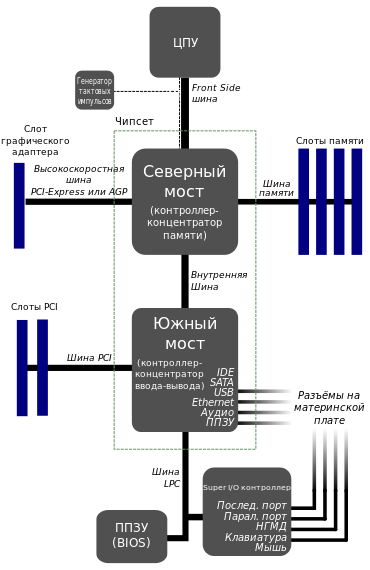
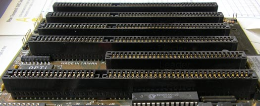
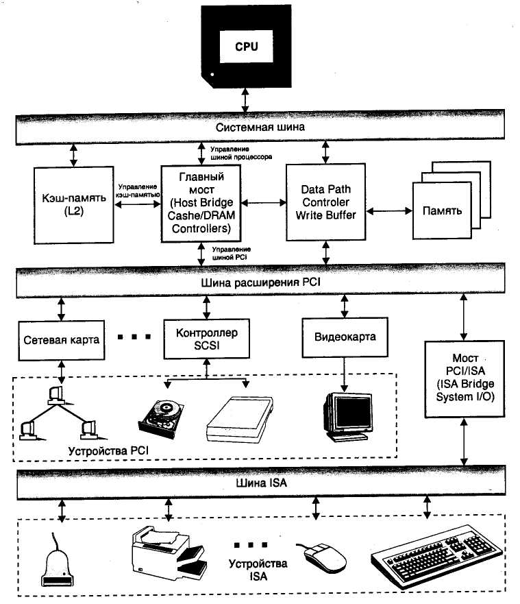
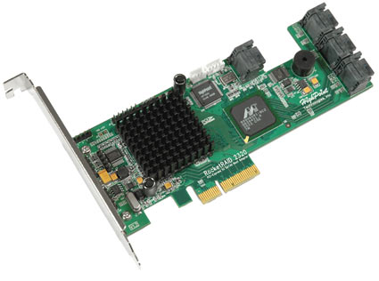
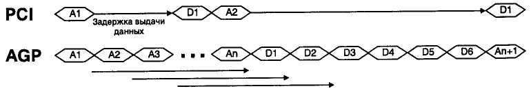
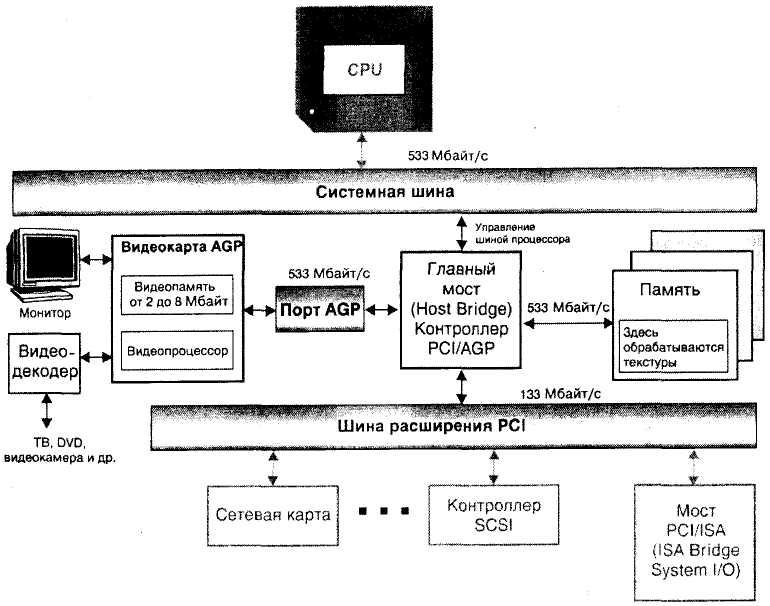
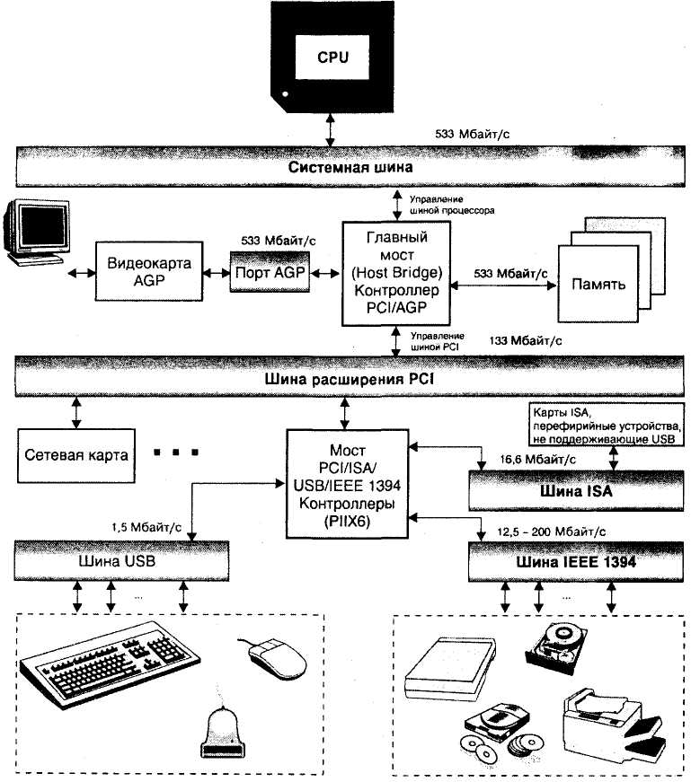
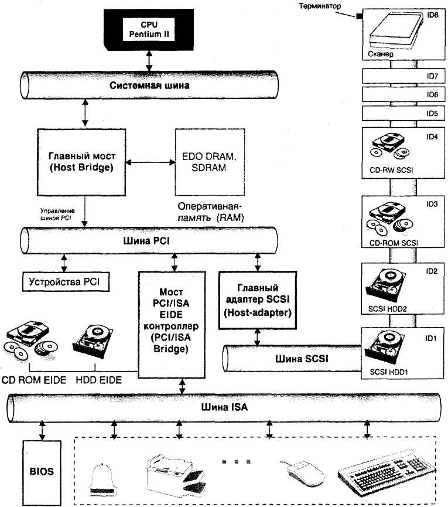
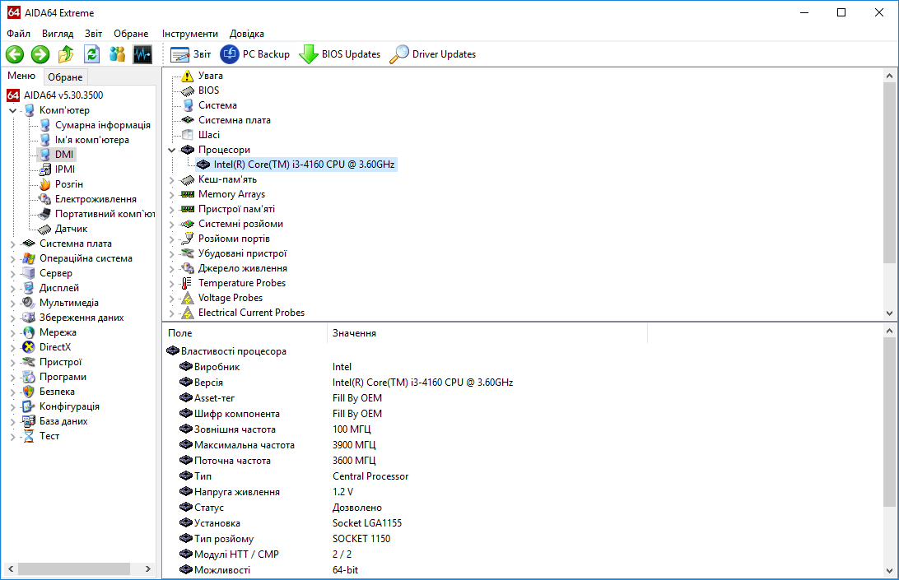

4.2. Методические указания по организации самостоятельной работы студентов
4.3. Описание лабораторной установки
4.4. Порядок выполнения работы и методические указания по ее выполнению
4.6. Контрольные вопросы и задания
Изучение архитектуры шин компьютера, их назначение, характеристики и применение. Разработка схемы подключения устройств компьютера (процессора, памяти, модулей ввода/вывода и периферийных устройств) к шинам.
Шиной (Bus) называется совокупность линий (проводников на материнской плате), по которым обмениваются данными компоненты и устройства PC (рис. 4.1). Шина предназначена для обмена данными между двумя и более устройствами. Шина, связывающая только два устройства, называется портом.
Обычно шина имеет места для подключения внешних устройств, которые в результате сами становятся частью шины и могут обмениваться данными со всеми другими подключенными к ней устройствами.

Рисунок 4.1 - Архитектура шин компьютера
Линии шины делятся на три группы в зависимости от типа передаваемых данных:
Наличие трех групп линий является отличительным признаком шины от других систем соединения.
Шины в PC различаются по своему функциональному назначению.
Системная шина (или Front Side шина) используется микросхемами Chipset для пересылки данных к и от CPU.
Шина памяти используется для обмена данными между оперативной памятью и CPU.
PCI Express, или PCIe, или PCI-E (также известная как 3GIO for 3rd Generation I/O; не путать с PCI-X и PXI) — компьютерная шина (хотя на физическом уровне шиной не является, будучи соединением типа «точка-точка»), использующая программную модель шины PCI и высокопроизводительный физический протокол, основанный на последовательной передаче данных.
До появления стандарта PCI-E при обработке трехмерных изображений широко использовалась разработанная корпорацией Intel шина AGP (Accelerated Graphics Port). Фактически шина AGP является портом, т. к. она предназначена для обмена информацией только между двумя устройствами.
Шины ввода/вывода, которые подразделяются на стандартные и локальные.
Локальная шина ввода/вывода — это скоростная шина, предназначенная для обмена данными между быстродействующими периферийными устройствами (видеоадаптерами, сетевыми картами, картами сканера и др.) и системной шиной под управлением Chipset. В настоящее время в качестве этой шины используется шина PCI. Ранее применялись шины ISA и VLB.
Стандартная шина ввода/вывода используется для подключения к вышеперечисленным шинам более медленных устройств (например, мыши, клавиатуры, модемов, старых звуковых карт). До недавнего времени в качестве этой шины использовалась шина стандарта ISA. В настоящее время в соответствии со спецификациями PC 98, PC 99 и PC 2001 им на смену пришли шины LPC (Low Pin Count), USB.
Этим списком не исчерпывается весь набор шин PC. В зависимости от своего функционального назначения современные PC могут быть оборудованы такими шинами, как USB, SCSI, FireWire, которые устанавливаются в слоты расширения или интегрированы в материнскую плату. Их работу обеспечивает соответствующий контроллер.
Контроллер шины осуществляет управление процессом обмена данными и служебными сигналами и обычно выполняется в виде отдельной микросхемы либо интегрируется в микросхемы Chipset. Например, контроллер Chipset i440BX шины PCI интегрирован в микросхему 82443ВХ.
Шина данных. По этой шине происходит обмен данными между CPU, картами расширения, установленными в слоты, и памятью. Особую роль при этом играет так называемый режим DMA (Direct Memory Access). Управление обменом данными в этом режиме осуществляется соответствующим контроллером, минуя CPU. DMA-контроллер, реализованный ранее на микросхеме 82С206, в настоящее время интегрируется в одну из микросхем Chipset, например 82443ВХ.
Чем выше разрядность шины, тем больше данных может быть передано за определенный промежуток времени и тем выше будет производительность PC.
Компьютеры с процессором 80286 имели 16-разрядную шину данных, с CPU 80386 i 80486 — 32-разрядную, а компьютеры с CPU семейства Pentium имеют уже 64-разрядную шину данных.
Объем адресуемой памяти = 2n,
где n— число линий шины адреса.
Процессор 8088, например, имел 20 адресных линий и мог, таким образом, адресовать память объемом 1 Мбайт (220 = 1 048 576 байт = 1024 Кбайт). В PC с процессором 80286 разрядность адресной шины была увеличена до 24 бит, а современные процессоры 80486, Pentium, Pentium MMX и Pentium II имеют уже 32-разрядную шину адреса, с помощью которой можно адресовать 4 Гбайт (232 байт) памяти.
Для успешной передачи данных не достаточно установить их на шине данных и задать адрес на шине адреса. Для того чтобы данные были записаны (считаны) в регистры устройств, подключенных к шине, адреса которых указаны на шине адреса, необходим ряд служебных сигналов: записи/считывания, готовности к приему/передаче данных, подтверждения приема данных, аппаратного прерывания, управления и инициализации контроллера DMA и др. Все эти сигналы передаются по шине управления.
Важнейшей характеристикой шины является разрядность шины (иногда говорят ширина шины), которая определяется количеством данных, параллельно "проходящих" через нее. Здесь и в самом деле напрашивается прямое сравнение с автобусом (bus — автобус, шина). Чем больше в автобусе посадочных мест, тем больше людей можно в нем перевезти.
Первая шина ISA для IBM PC была 8-разрядной, т. е. по ней можно было одновременно передавать лиши 8 бит. Шина ISA — 16-разрядная, а шины ввода/вывода VLB и PCI — 32-разрядные. Системные шины современных PC на базе процессоров пятого и шестого поколения — 64-разрядные.
Пропускная способность шины. Второй характеристикой шины является пропускная способность, которая определяется количеством бит информации, передаваемых по шине за секунду.
Для определения пропускной способности шины необходимо умножить тактовую частоту шины на ее разрядность. Например, для 16-разрядной шины ISA пропускная способность определяется так:
(16 бит х 8,33 МГц) : 8 = (133,28 Мбит/с) : 8 = 16,66 Мбайт/с.
Отметим, что при расчете пропускной способности, например шины AGP, следует учитывать режим ее работы: благодаря увеличению в 2 раза тактовой частоты видео процессора и изменению протокола передачи данных удалось повысить пропускную способность шины в 2 (режим 2х) или в 4 (режим 4х) раза, что эквивалентно увеличению тактовой частоты шины в соответствующее количество раз (до 133 и 266 МГц соответственно). В табл. 4.1 представлены характеристики некоторых шин ввода/вывода.Таблица 4.1 - Характеристики шин ввода/вывода
| Шина | Разрядность, бит | Тактовая частота, МГц | Пропускная способность, Мбайт/с |
|---|---|---|---|
| ISA 8-разрядная | 8 | 8,33 | 8,33 |
| ISA 16-разрядная | 16 | 8,33 | 16,6 |
| EISA | 32 | 8,33 | 33,3 |
| VLB | 32 | 33 | 264 |
| PCI | 32 / 64 | 33 | 132 / 264 |
| PCI 2.1 64-разрядная | 64 | 66 | 528,3 |
| PCI-X 1.0 | 64 | 100 133 |
800 1 064 |
| PCI-X 2.0 | 64 | 266 533 |
2 128 4 264 |
| PCI-E 1.0 | x1 x16 |
2500 (код 8b/10b) | 250 4 000 |
| PCI-E 2.0 | x1 x16 |
5000 (код 8b/10b) | 500 8 000 |
| PCI-E 3.0 | x1 x16 |
8000 (код 128b/130b) | 984,6 15 754 |
| PCI-E 4.0 | x1 x16 |
16000 (код 128b/130b) | 1 969 15 754 |
| PCI-E 5.0* (* еще не принят) |
x1 x16 |
32000 (код 128b/130b) | 4 000 64 000 |
| AGP(1x) | 32 | 66 | 262,6 |
| AGP (2x) | 32 | 66x2 | 528,3 |
| AGP (4x) | 32 | 66x4 | 1 056,6 |
Внешние устройства к шинам подключаются посредством интерфейса. Под интерфейсом (Interface — сопряжение) понимают совокупность различных характеристик какого-либо периферийного устройства PC, определяющих организацию обмена информацией между ним и центральным процессором. Это электрические и временные параметры, набор управляющих сигналов, протокол обмена данными и конструктивные особенности подключения. При этом обмен данными между компонентами PC возможен только в случае совместимости их интерфейсов.
Принцип IBM-совместимости подразумевает стандартизацию интерфейсов отдельных компонентов PC, что, в свою очередь, определяет гибкость системы в целом, т. е. возможность по мере необходимости изменять конфигурацию системы и подключать различные периферийные устройства. В случае несовместимости интерфейсов (например, интерфейс системной шины и интерфейс винчестера) используются контроллеры. Кроме того, гибкость и унификация системы достигается за счет введения промежуточных стандартных интерфейсов, таких как интерфейсы последовательной и параллельной передачи данных, являющиеся необходимыми для работы наиболее важных периферийных устройств ввода и вывода.
Системная шина предназначена для обмена информацией между CPU, памятью и другими устройствами, входящими в систему.
Системная шина GTL+ (Р6) разработана корпорацией Intel для процессоров шестого поколения. Разрядность шины — 64 бита, а тактовая частота — 66, 100 и 133 МГц. Пропускная способность шины составляет 528, 800 и 1,06 Мбайт/с соответственно. На шине GTL+ "висят" CPU, модули оперативной памяти, шина PCI и AGP (при их наличии в системе).
Шина EV6 разработана компанией DEC (Digital Equipment Corpora-tion) для CPU Alpha 21264. В мире PC она используется корпорацией AMD для систем с CPU K-7. Ниже перечислены основные ее отличия от шины GTL+.
Шина ISA (Industry Standard Architecture, Промышленная стандартная архитектура) долгие годы являлась стандартом в области PC и считается самой "старой" в семействе шин, однако до недавнего времени она использовалась даже в новейших моделях PC. Дело в том, что у пользователей имеется еще множество периферийных устройств, использующих стандарт ISA (модемы, сканеры, звуковые карты и т. п.), Для которых быстродействия этой шины более чем достаточно.
Корпорация Intel совместно с Microsoft разработала стратегию (спецификации PC 98 и PC 99) постепенного отказа от шины ISA. Согласно этой концепции на первом этапе производителям материнских плат следует исключить слоты ISA, что должно вынудить производителей карт расширения полностью перейти на производство PCI-карт. На следующем этапе планировалось полностью отказаться от ISA-разъемов на материнской плате. Предполагается подключать дисководы, мышь, кла-виатуру, сканер и другие устрой-ства к шине USB, а для подключения, например, винчестеров, приводов CD-ROM и DVD-ROM, видеокамер использовать новую шину IEEE 1394.

Рисунок 4.2 - Слоты 16-разрядной и 8-разрядной шины ISA
Если вы посмотрите на слот 16-разрядной шины, обозначаемой иногда AT BUS, то увидите, что он состоит из двух частей, одна из которых в точности соответствует слоту 8-разрядной шины XT, а на контакты второй выведены линии для дополнительных адресов ввода/вывода, прерываний и каналов DMA. На этом основании короткие 8-разрядные карты можно устанавливать в 16-разрядный слот. Сделать это наоборот, конечно же, невозможно. Слоты 16- и 8-разрядной шины ISA показаны на рис 4.2. Передача байта данных по шине ISA происходит следующим образом. Сначала на адресной шине выставляется адрес ячейки RAM или порта устройства ввода/вывода, куда следует передать байт, затем на линии данных выставляется байт данных, по одной из линий шины управления передается сигнал записи WR (строб записи). Причем контроль записи (проверка, успели записаться данные или нет) не производится. Поэтому тактовая частота шины ISA выбрана равной 8,33 МГц, чтобы даже самые медленные устройства гарантированно успевали производить по шине обмен данными и командами.
Основная проблема шины ISA состоит в том, что при оптимальной тактовой частоте процессоров 80386 и 80486 она является как бы "горлышком бутылки" (Boutleneck — узкое место), поскольку данные не могут передаваться по шине с той же скоростью, с какой их обрабатывает CPU. Поэтому процессор в ожидании данных вынужден простаивать (цикл ожидания). Это и явилось причиной появления шин других стандартов.
Шина PCI - Peripheral Component Interconnect была разработана фирмой Intel для своего нового высокопроизводительного процессора Pentium. В современных материнских платах тактовая частота шины PCI задается как половина тактовой частоты системной шины, т. е. при тактовой частоте системной шины 66 МГц шина PCI будет работать на частоте 33 МГц, при частоте системной шины 100 МГц — 50 МГц. Основополагающим принципом, положенным в основу шины PCI, является применение так называемых мостов (Bridges), которые осуществляют связь между шиной PCI и другими шинами.
Важной особенностью шины PCI является то, что в ней реализован принцип Bus Mastering, который подразумевает способность внешнего устройства при пересылке данных управлять шиной (без участия CPU). Во время передачи информации устройство, поддерживающее Bus Mastering, захватывает шину и становится главным. При таком подходе центральный процессор освобождается для выполнения других задач, пока происходит передача данных. Применительно к устройствам IDE - Integrated Drive Electronics (например, винчестер, CD-ROM) Bus Mastering IDE означает наличие определенных схем на материнской плате, позволяющих осуществлять передачу данных с жесткого диска в обход CPU. Это особенно важно при использовании многозадачных операционных систем типа Windows 95/98, Windows NT, OS/2 и т. п.

Рисунок 4.3 - Архитектура шины PCI
В настоящее время шина PCI стала стандартом среди шин ввода/вывода (рис. 4.3). Рассмотрим ее архитектуру несколько подробнее.
В шине PCI используется совершенно отличный от шины ISA способ передачи данных. Этот способ, называемый "способом рукопожатия", заключается в том, что в системе определяются два устройства: инициатор (Iniciator) и исполнитель (Target). Когда инициирующее устройство готово к передаче, оно выставляет данные на линии данных и сопровождает их соответстующим сигналом (Indicator Ready), при этом исполняющее (подчиненное) устройство записывает данные в свои регистры и подает сигнал Target Ready, подтверждая запись данных и готовность к приему следующих. Установка всех сигналов, а также чтение/запись данных производятся строго в соответствии с тактовыми импульсами шины, частота которых равна 33 МГц.
Основное преимущество PCI-технологии заключается в относительной независимости отдельных компонентов системы. В соответствии с концепцией PCI, передачей пакета данных управляет не CPU, а включенный между ним и шиной PCI мост (Host Bridge Cashe/DRAM Controller). Процессор может продолжать работу и тогда, когда происходит запись данных в RAM (или их считывание) либо при обмене данными между двумя любыми компонентами системы.
В соответствии со спецификацией PCI 1.0 шина PCI — 32-разрядная, a PCI 2.0 64-разрядная. Таким образом, полоса пропускания шины составляет, соответственно, 33 МГц х (32 бит : 8) = 132 Мбайт/с и 33 МГц х (64 бит : 8) = 264 Мбайт/с.
Шина PCI универсальна (или самодостаточна). Поскольку системная шина и шина PCI соединены с помощью главного моста (Host-Bridge), то последняя является самостоятельным устройстве и может использоваться независимо от типа CPU.
В соответствии со спецификацией PCI 5.0, ширина шины увеличена до 64 разрядов, слоты PCI имеют дополнительные контакты, на которые подается напряжение 3,3 В. Большинство современных микросхем PC работает при таком напряжении.
Система PCI использует принцип временного мультиплексирования, т. е. когда для передачи данных и адресов применяются одни и те же линии.
Важным свойством шины PCI является ее интеллектуальность, т. е. она в состоянии распознавать аппаратные средства и анализировать конфигурации системы в соответствии с технологией Plug&Play, разработанной корпорацией Intel.
PCI-X 1.0 — расширение шины PCI64 с добавлением двух новых частот работы, 100 и 133 МГц, а также механизма раздельных транзакций для улучшения производительности при одновременной работе нескольких устройств. Как правило, обратно совместима со всеми 3.3В и универсальными PCI-картами.
PCI-X карты обычно выполняются в 64-бит 3,3 В формате и имеют ограниченную обратную совместимость со слотами PCI64/66, а некоторые PCI-X карты — в универсальном формате и способны работать (хотя практической ценности это почти не имеет) в обычном PCI 2.2/2.3.
В сложных случаях для того, чтобы быть полностью уверенным в работоспособности комбинации из материнской платы и карты расширения, надо посмотреть таблицы совместимости (compatibility lists) производителей обоих устройств.
PCI-X 2.0 — дальнейшее расширение возможностей PCI-X 1.0; добавлены частоты 266 и 533 МГц, а также — коррекция ошибок чётности при передаче данных (ECC). Допускает расщепление на 4 независимых 16-битных шины, что применяется исключительно во встраиваемых и промышленных системах; сигнальное напряжение снижено до 1,5 В, но сохранена обратная совместимость разъёмов со всеми картами, использующими сигнальное напряжение 3,3 В.
В настоящее время для не профессионального сегмента рынка высокопроизводительных компьютеров (мощных рабочих станций и серверов начального уровня), в которых находит применение шина PCI-X, выпускается крайне мало материнских плат с поддержкой шины. Примером материнской платы для такого сегмента является ASUS P5K WS.
В профессиональном сегменте применяется в RAID-контроллерах, в SSD-накопителях под PCI-E
Разработка стандарта PCI Express была начата фирмой Intel после отказа от шины InfiniBand. Официально первая базовая спецификация PCI Express появилась в июле 2002 года. Развитием стандарта PCI Express занимается организация PCI Special Interest Group.
В отличие от стандарта PCI, использовавшего для передачи данных общую шину с подключением параллельно нескольких устройств, PCI Express, в общем случае, является пакетной сетью с топологией типа звезда.
Устройства PCI Express взаимодействуют между собой через среду, образованную коммутаторами, при этом каждое устройство напрямую связано соединением типа точка-точка с коммутатором.
Кроме того, шиной PCI Express поддерживается:
Шина PCI Express нацелена на использование только в качестве локальной шины. Так как программная модель PCI Express во многом унаследована от PCI, то существующие системы и контроллеры могут быть доработаны для использования шины PCI Express заменой только физического уровня, без доработки программного обеспечения. Высокая пиковая производительность шины PCI Express позволяет использовать её вместо шин AGP и тем более PCI и PCI-X.[2] Де-факто PCI Express заменила эти шины в персональных компьютерах.
Разъёмы PCI Express

Рисунок 4.4 - RAID-контроллер SATA II с интерфейсом PCIe HighPoint RocketRAID 2320
Несмотря на все преимущества шины PCI, ее возможностей становится недостаточно в условиях растущей нагрузки на систему. Причина заключается в том, что новое поколение графических микросхем работает одновременно с трехмерной графикой и видео. Только для управления пользовательским графическим интерфейсом требуется половина пропускной способности шины. Очевидно, что одной шины PCI для пересылки графических и видеоданных недостаточно, — в пределах графической подсистемы необходима дополнительная шина. Специально разработанные для этой цели шины VAFC (Vesa Advanced Feature Connector) со скоростью передачи данных около 20 Мбайт/с и VMC (Vesa Media Channel) — 16 Мбайт/с не получили широкого распространения.
Чтобы, не меняя уже сложившийся стандарт на шину PCI, ускорить ввод/вывод данных на видеоадаптер и, кроме того, увеличить производительность PC при обработке трехмерных изображений без установки специализированных дорогостоящих двухпроцессорных видеоадаптеров, в 1997 г. фирмой Intel был разработан стандарт на шину AGP (Accelerated Graphics Port). AGP является каналом передачи данных между видеоадаптерами и памятью RAM, а также системной шиной процессора, при этом не пересекаясь с шиной PCI. Примечание. Так как шина AGP соединяет только два устройства (видеоадаптер и RAM), то фактически является не шиной, а портом. Шина AGP — это высокоскоростная локальная шина ввода/вывода, предназначенная исключительно для нужд видеосистемы. Она связывает ви-деоадаптер (3D-акселератор) с системной памятью PC, поэтому на материнской плате имеется только один разъем (слот) AGP. Поскольку шину AGP использует только одно устройство, не возникает характерной для шины PCI проблемы арбитража (когда несколько устройств одновременно требуют доступа к шине), что повышает скорость обмена данными между видеоадаптером и системной памятью.
Шина AGP была разработана на основе архитектуры шины PCI, поэтому она также является 32-разрядной. Вместе с тем, у нее имеется ряд важных отличий от шины PCI, позволяющих в несколько раз увеличить пропускную способность.
Режимы 2х и 4х. Если шина PCI в стандартном варианте (32-разрядная) имеет тактовую частоту 33 МГц, что обеспечивает теоретически пропускную способность шины PCI 33 х 32 = 1056 бит/с = 132 Мбайт/с, то шина AGP тактируется сигналом с частотой 66 МГц, поэтому ее пропускная способность составляет 66 х 32 = 264 Мбайт/с (это соответствует так называемому режиму 1х). Помимо режима 1х, стандартом AGP Revision 1.0 предусмотрен режим 2х, при котором передача данных производится не только по переднему, но и по заднему фронту тактового импульса. В режиме 2х эквивалентная тактовая частота составит 132 МГц, а пропускная способность — 528 Мбайт/с. Заметим, что режим 2х идеально подходит для процессоров семейства Pentium и старше, у которых внешняя шина данных, как известно, является 64-разрядной (это позволяет за один такт выполнить две 32-разрядных команды или обработать два 32-разрядных слова).
В последних версиях шины AGP (AGP Revision 2.0), использующих пониженное напряжение питания, за один такт синхронизации удается выполнить уже не две, а четыре передачи (режим 4х), при этом скорость передачи данных через шину составляет около 1 Гбайт/с. Кроме того, наиболее современные видеоадаптеры, выполненные на основе прогрессивных технологий 0,25 мкм и 0,18 мкм, обычно устойчиво работают на более высоких частотах шины AGP, чем 66 МГц (например, при использовании в Chipset Intel 440BX тактовой частоты системной шины около 133 МГц вместо положенных 100 МГц тактовая частота шины AGP, определяемая как 66% частоты системной шины, составит не 66, а около 90 МГц). Таким образом, пропускная способность интерфейса AGP значительно выше, чем интерфейса PCI. Pipelining — конвейерная (пакетная) передача данных. При обращении к памяти через шину ввода/вывода обязательно возникают задержки, т. е. ме-жду моментом выставления кода адреса и моментом получения кода данных проходит какое-то время. При обмене через шину PCI эта задержка возникает при каждом обращении. Шина AGP, в отличие от PCI, предусматривает pipelining — конвейерную (пакетную) передачу данных (рис. 4.5), при которой новый запрос (код адреса) выставляется на шине сразу же после предыдущего, т. е. запросы выстраиваются в очередь (ее длина может достигать 256). Все запрошенные данные передаются по шине также в виде непрерывного пакета. В результате этого задержка получения данных может возникнуть только один раз, что значительно повышает скорость обмена данными через шину AGP по сравнению с обменом через шину PCI.

Рисунок 4.5 - Конвейерная обработка данных на AGP
Как известно, шина PCI является мультиплексированной (переключаемой): одни и те же 32 линии ADO—AD31 сначала используются для передачи кода адреса, а затем — кода данных. Иногда такой режим называют AD (Address — Data). Шина AGP также может работать в режиме AD, однако она допускает применение режима SBA (Side-Band Addressing — Адресация по боковой полосе), при котором для передачи кода адреса используются восемь дополнительных линий разъема AGP, именуемых SBO—SB7. Поскольку код адреса, как и код данных — 32-разрядный, то такое разделение является частичным демультиплексированием (для полного демультиплексирования надо выделить 32 линии вместо 8, а это весьма дорого).
Режим SBA используется только в режиме 2х, причем при пакетной передаче. Для выполнения адресации в режиме SBA используются три такта синхронизации (при этом, с учетом режима 2х, по проводам SBO—SB7 передается 6 байт). В течение первых двух тактов передаются 4 байта адреса, а в течение третьего такта — 1 байт длины запроса и 1 байт команды. Провода ADO—AD31 шины AGP в режиме SBA используются исключительно для передачи данных, поэтому скорость передачи данных в данном режиме существенно выше, чем в режиме AD.
Режим прямого исполнения в системной памяти (DiME). Коль скоро стандарт AGP был разработан для использования видеоадаптером системной памяти, следует оговорить режимы ее использования. Для видеоадаптера с ин-терфейсом AGP возможны два режима работы с системной памятью: DMA и DiME (DME)
.
Рисунок 4.6 - Структурная схема видеосистемы на основе шины AGP
Традиционным является режим DMA (Direct Memory Access — Прямой доступ к памяти), причем он, как известно, используется не только видео-адаптером, но и другими периферийными устройствами PC, имеющими более или менее интеллектуальный контроллер (например, накопители на магнитных дисках, звуковые карты и др.). Цель режима DMA ясна из его названия — обеспечить прямой обмен данными между устройством и системной памятью, минуя регистры центрального процессора (напомним, что второй вариант носит название Р1О — Программный ввод/вывод). Когда ЗD-акселератор работает в режиме DMA, основной для него является локальная память (именно в ней производятся все операции обработки текстур), а системная память ис-пользуется только в качестве "хранилища", поэтому обмен данными по шине AGP в режиме DMA ведется большими последовательными пакетами. Значительного выигрыша в скорости работы по сравнению с интерфейсом РС1 в данном режиме обычно не наблюдается.
Совершенно иначе обстоит дело в режиме DME или DiME (Direct Memory Execution — Непосредственное выполнение операций с текстурами в основной памяти компьютера). В этом режиме локальная и системная память являются для графического процессора ЗD-акселератора равноценными и адресуются одинаково. В результате появляется возможность выполнить предварительную обработку текстуры в системной памяти, а в локальную память загрузить только ее окончательный вариант. Это кардинальным образом меняет характер информационного обмена — в режиме DiME обмен ведется главным образом короткими пакетами. Именно в режиме DiME радикально ускоряется выполнение операций с текстурами при их хранении в системной памяти. В самом общем виде структурная схема видеосистемы на основе AGP представлена на рис. 4.6.
Спецификация периферийной шины USB (Universal Serial Bus) была разработана фирмами — лидерами компьютерной и телекоммуникационной промышленности — Compaq, DEC, IBM, Intel, Microsoft, NEC и Northern Telecom — для подключения периферийных устройств вне корпуса PC. Шина USB поддерживает технологию Plug&Play. Скорость обмена информацией по шине USB составляет 12 Мбит/с. На новых материнских платах имеется специальный разъем для подключения концентратора USB (USB-Hab).

Рисунок 4.7 - Архитектура шины USB
К компьютерам, оборудованным шиной USB, можно подсоединять периферийные устройства (клавиатуру, мышь, джойстик, принтер и др.), не выключая питание. Как только устройство будет подключено, автоматически осуществляется его конфигурирование. Все периферийные устройства должны быть оборудованы разъемами USB и подключаться к PC через отдельный выносной блок, именуемый USB-хабом или концентратором, с помощью которого к PC можно подключить до 127 периферийных устройств. Архитектура шины USB представлена на рис. 4.7. Для использования шины USB под управлением операционных систем Windows 95/ 98/2000, Windows NT и OS/2 Warp разработаны специальные драйверы. Согласно спецификациям PC 98, PC 99 и PC 2001 корпорация Intel планирует полностью заменить шину ISA шиной USB для подключения низкоскоростных периферийных устройств ввода/вывода и шиной FireWire (IEEE 1394) для подключения устройств хранения информации (CD-ROM, HDD и др.) и ввода видеоданных.
Шина SCSI (Small Computer System Interface) обеспечивает скорость передачи данных до 320 Мбайт/с и предусматривает подключение к одному адаптеру до восьми устройств (винчестеры и приводы CD-ROM SCSI, сканеры, фото- и видеокамеры и др.) В отличие от рассмотренных выше шин, шина SCSI реализована в виде кабельного шлейфа. С шиной PC (ISA или PCI) шина SCSI связывается через хост-адаптер (Host Adapter). Каждое устройство, подключенное к шине, имеет свой идентификационный номер (ID). Обычно хост-адаптеру, который должен иметь высший приоритет, назначается ID7. Любое устройство, подключенное к шине SCSI, может инициировать обмен с другим устройством.

Рисунок 4.8 - Шина SCSI с подключенными устройствами
Как видно из рис. 4.8, скорость обмена данными через интерфейс SCSI ограничена производительностью шины ввода/вывода. Таким образом, данные могут передаваться, например, по 16-разрядной шине SCSI со скоростью до 20 Мбайт/с.
В сентябре 1998 г. появилась шина Ultra3 SCSI, которая имеет 63 изменения по сравнению с предыдущими версиями. После выпуска первых промышленных образцов новая спецификация получила название Ultral60. Пропускная способность шины увеличилась до 160 Мбайт/с. Основными особенностями Ultral60 являются:
В качестве лабораторной установки используются ПК, входящие в состав кафедральной локальной сети, оснащенные операционными системами Windows и прикладным программным обеспечением AIDA64 и SiSoft Sandra Professional.
1. Открыть программное приложение AIDA64.
2. На экране монитора будет отображено основное окно приложения.

Рисунок 4.9 - Окно приложения AIDA64
3. В главном окне найти папку Комп'ютер→DMI→Процесори. Дважды щелкните на папке System Summary, на экране появится всплывающее окно вызываемой папки.
4. На основании данных, отображаемых в папке System Summary, заполнить таблицу (табл. 4.2) основных элементов исследуемого компьютера (рабочей станции).
Таблица 4.2 - Основные компоненты компьютерной системы
| Параметр | Значение | |
|---|---|---|
Материнская плата и процессор(ы) | ||
1. Процессор(ы) | ||
| 1.1. Наименование | DualCore Intel Core i3-4160 | |
| 1.2. Тактовая частота | 3600 МГц | |
| 1.3. Разрядность | 64 бита | |
| 1.4. Количество ядер | 2 | |
| 1.5. Размеры кэш-памяти | L1 - 128 кБайт, L2 - 512 кБайт, L3 - 4096 кБайт | |
2. Память | ||
| 2.1. Объем памяти | 4096 Mбайт | |
| 2.2. Тактовая частота | 1600 МГц | |
| 2.3. Разрядность | 64 бит | |
| 2.4. Форм-фактор | DIMM | |
| 2.5. Тип | DDR3 | |
| 2.6. Размещение | ChannelA-DIMM0 | |
3. Мосты | ||
| 3.1. Северный мост | Intel Haswell-DT IMC | |
| 3.2. Южный мост | Intel Lynx Point H81 | |
4. Шина PCI | ||
| 4.1. Устройства PCI | 1. ADMtek AN983 Fast Ethernet Adapter 2. GeCube Radeon 9600 - Secondary Video Adapter 3. Intel 82801EB I/O Controller Hub 5 (ICH5) [A-2/A-3] ... | |
4. Нарисовать схему архитектуры шин исследуемой системы и подключить к ней все компоненты компьютера.
5 Результаты исследования (табл. 4.2 и структурную схему шинной архитектуры компьютера) предъявить преподавателю по окончании выполнения работы.
Отчет по работе должен содержать: